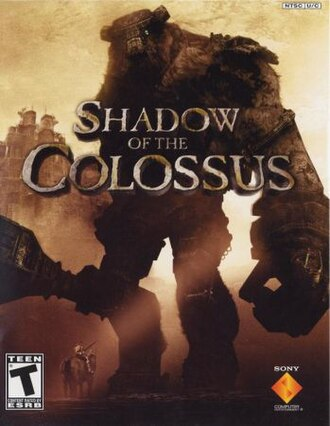
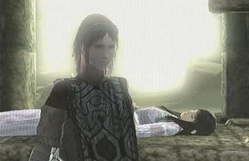
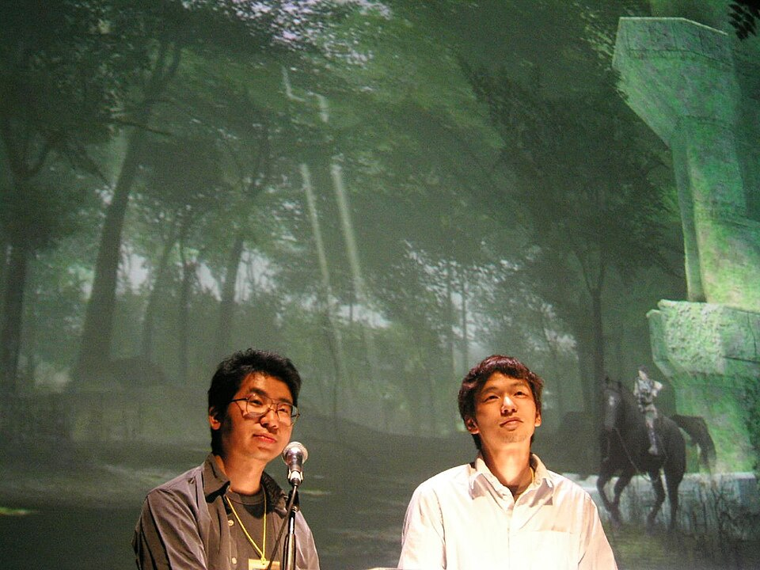

Shadow of the Colossus
Introdução
VoltarShadow of the Colossus, lançado no Japão como Wander and the Colossus (ワンダと巨像, Wanda to Kyozō), é um jogo eletrônico de ação-aventura desenvolvido pela SCE Japan Studio e publicado pela Sony Computer Entertainment para o PlayStation 2. O jogo foi lançado na América do Norte e no Japão em outubro de 2005 e em territórios PAL em fevereiro de 2006. Ele foi dirigido por Fumito Ueda e desenvolvido pelo International Production Studio 1, também conhecida como Team Ico; o mesmo time de desenvolvimento de Ico. O enredo do jogo se concentra em um jovem chamado Wander, que deve viajar por uma terra proibida com o objetivo de derrotar dezesseis criaturas conhecidas simplesmente como "Colossi", para restaurar a vida de uma garota chamada Mono.
O jogo é incomum dentro do gênero de ação-aventura já que não existem cidades e calabouços para serem explorados. Não existe também nenhum personagem com quem interagir e nenhum inimigo além dos Colossos para derrotar. Shadow of the Colossus foi descrito como um jogo de quebra-cabeças, já que a fraqueza de cada Colossus deve ser identificada e explorada para que ele seja derrotado.

Shadow of the Colossus foi aclamado pela crítica, recebendo elogios por sua arte, design de som, trilha sonora e jogabilidade. O jogo é frequentemente citado como um dos maiores jogos de todos os tempos e é considerado um título de culto. Ele ganhou vários prêmios, incluindo o prêmio de "Jogo do Ano" da GameSpot em 2005. Em 2011, uma versão remasterizada do jogo foi lançada para o PlayStation 3 como parte da coleção Ico & Shadow of the Colossus HD Collection. Em 2018, um remake do jogo foi lançado para o PlayStation 4.
Uma versão remasterizada chamada The Ico & Shadow of the Colossus Collection desenvolvida pela Bluepoint Games, compilando ambos os jogos, foi lançada para PlayStation 3 em setembro de 2011, apresentando gráficos de alta definição, conteúdos anteriormente ausentes na versão norte-americana, troféus na PlayStation Network e suporte 3D. A versão remasterizada foi lançada separadamente no Japão. Um remake de Shadow of the Colossus foi lançado em fevereiro de 2018 como um exclusivo para o PlayStation 4.
Sinopse
VoltarO jogador recebe pouca informação sobre as histórias por trás dos personagens e as suas relações uns com os outros no decorrer de Shadow of the Colossus. O jogo se passa em um mundo de fantasia, com a maioria dos eventos ocorrendo dentro de uma vasta península não povoada conhecida como a "Terra Proibida", separada do mundo exterior por uma cordilheira a seu norte e mar ao sul e leste. A presença de ruínas e outras estruturas antigas indicam que a área já foi povoada.
A região só é acessível através de uma pequena fenda nas montanhas ao norte, levando a uma enorme ponte de pedra. Esta ponte mede metade da distância da região e termina numa entrada para um grande templo chamado de "Templo de Adoração" localizado em seu centro. É, entretanto, proibido entrar na terra, que se particulariza por diversas características geográficas, como lagos, planaltos, desfiladeiros, cavernas e desertos, além de estruturas feitas pelo homem.
Personagens
Voltar
O protagonista do jogo é Wander (ワンダ, Wanda; voz de Kenji Nojima), um jovem cujo objetivo é ressuscitar uma garota chamada Mono (モノ; dublada por Hitomi Nabatame). Pouco se sabe sobre Mono, a não ser que ela foi sacrificada de alguma forma porque se acreditava ter um destino amaldiçoado. Wander e Mono foram projetados com cabelos longos desde o início do processo de desenho, especificamente Mono, como um contraste a Yorda de Ico, que tinha cabelo curto. Ajudando Wander está sua égua Agro (アグロ, Aguro), que serve como sua única aliada na luta contra os Colossi. Wander também recebe ajuda de uma entidade chamada Dormin (ドルミン, Dorumin; voz de Kazuhiro Nakata e Kyōko Hikami). A história gira em torno desses personagens, mas apresenta um pequeno elenco de apoio incluindo o Lorde Emon (エモン; voz de Naoki Bandō).
Dormin é uma misteriosa entidade e sem corpo que fala com duas vozes ao mesmo tempo, uma masculina e outra feminina. Segundo a lenda do mundo do jogo, é dito que Dormin tem o poder de reviver os mortos; é por isso que Wander entra na Terra Proibida, buscando sua ajuda para reviver Mono. Dormin pede para Wander destruir os dezesseis Colossi em troca de ressuscitar a garota.
Lorde Emon é um xamã que narra uma visão na introdução do jogo, vagamente explicando a origem da terra para a qual Wander foi e enfatizando que a entrada neste local é proibida. Ele é descrito como um grande conhecedor sobre Dormin e sua contenção e sobre a habilidade de usar poderosas magias. Ele possui um pequeno grupo de guerreiros sob o seu comando e está perseguindo Wander para impedir o uso do "feitiço proibido", um ritual que envolve a destruição dos dezesseis Colossi e a restauração do poder de Dormin.
Os Colossi são criaturas enormes com armaduras e formas que variam de humanoides a animais predatórios, vivendo de acordo com o ambiente ao redor, incluindo debaixo d'água ou voando pelo céu. Seus corpos são uma fusão de partes orgânicas e inorgânicas, tais como rocha, terra, pele e elementos arquitetônicos, alguns dos quais estão fraturados ou desgastados. Alguns Colossi são pacíficos e só atacam quando provocados por Wander, enquanto outros são agressivos e atacarão logo após vê-lo. Eles não se aventuram fora de seu próprio território. Uma vez mortos, irão permanecer no local que morreram como um montículo de terra e rocha vagamente assemelhando-se ao colossus original.
Enredo
VoltarA história de Shadow of the Colossus começa com Wander entrando na Terra Proibida, atravessando a extensa ponte na entrada montado em sua égua Agro. De acordo com Lorde Emon mais tarde no jogo, antes de entrar na terra proibida Wander tinha roubado uma espada antiga, que é a única arma capaz de matar os Colossus da Terra Proibida. Seguindo ao grande Santuário de Adoração no centro da região, Wander carrega com ele o corpo de uma garota chamada Mono. Após um momento, várias criaturas obscuras com aparência de sombras e forma humanoide se preparam para atacar Wander, mas ele facilmente os repele usando a "Espada Antiga", que emite raios de luz. Após reprimir as criaturas da sombra, a voz de uma entidade sem corpo conhecida como "Dormin" ecoa do alto, expressando surpresa que Wander possui tal espada. Wander pede que Dormin devolva a alma de Mono ao seu corpo, o qual afirma que pode ser possível com a condição de que Wander possa destruir os dezesseis ídolos que revestem a sala do templo usando a antiga espada para matar os dezesseis Colossi localizados pela região. Apesar de ser avisado por Dormin que ele tenha que pagar um alto preço para reviver Mono, Wander começa a procurar na região os Colossi para destruí-los.
O que Wander não sabe é que os Colossi contêm porções da própria essência de Dormin que foi espalhada há muito tempo para tornar a entidade impotente. Quando Wander mata cada Colossus, um fragmento de Dormin entra em seu corpo. Com o tempo, depois de matar seu oitavo Colossus, a aparência física de Wander deteriora por causa das essências que entraram em seu corpo, tornando sua pele mais pálida, seu cabelo mais escuro, e cicatrizes escuras crescem em seu rosto. Após a morte do 12º Colossus, revela-se ao jogador que Wander está sendo perseguido por um grupo de guerreiros liderados por Emon. Apressado em terminar a sua tarefa dada por Dormin, Wander logo dirige-se para derrotar o 16º e último Colossus. No caminho para este confronto, ele viaja com seu cavalo e quando chega a uma longa ponte, ela começa a desmoronar quando eles chegam à metade do caminho. No último segundo, Wander é arremessado por Agro para o outro lado, enquanto ela cai no rio, muitos metros abaixo.
Logo depois Wander derrotar o último Colossus, o grupo de guerreiros de Emon chega no Santuário de Adoração para testemunhar o último ídolo do templo desmoronar. Logo depois Wander aparece com os seus olhos e pele totalmente pálidos e dois chifres saindo de sua cabeça. Declarando que Wander foi "possuído pelos mortos", Lorde Emon ordena aos seus guerreiros que o matem, enquanto que ele tenta se aproximar de Mono um guerreiro dispara uma flecha em sua perna com uma besta, enquanto que outro o apunhala no coração com uma espada. No entanto, Emon encontra um recém-inteiro Dormin possuir o corpo de Wander e transformar seu hospedeiro em um gigante sombrio. Enquanto seus homens fogem, Lorde Emon lança a espada antiga em uma pequena piscina na parte de trás do salão do santuário para evocar um turbilhão de luz que consome Dormin e Wander. Depois de fugir com a ponte ligando-se ao templo se desmoronar atrás deles, isolando para sempre a terra proibida do resto do mundo, Emon expressa a esperança de que Wander possa ser capaz de expiar seus crimes se ele tivesse sobrevivido. De volta ao templo, Mono desperta e encontra Agro mancando no santuário com a perna traseira ferida. Mono segue Agro para a piscina em que Wander e Dormin foram puxados pelo feitiço de Emon, encontrando um menino bebê com chifres minúsculos em sua cabeça. Ela leva a criança com ela, seguindo o cavalo para níveis mais elevados do Santuário de Adoração, e chega a um jardim secreto dentro do santuário e logo após o jogo termina.
Desenvolvimento
Voltar
Shadow of the Colossus foi desenvolvido pela SCE Japan Studio e publicado pela Sony Computer Entertainment para o PlayStation 2. O jogo foi dirigido por Fumito Ueda e desenvolvido pelo International Production Studio 1, também conhecida como Team Ico; o mesmo time de desenvolvimento de Ico. O desenvolvimento do jogo começou em 2001, logo após a conclusão de Ico, e durou cerca de cinco anos. O jogo foi anunciado oficialmente em 2005, durante a E3 daquele ano, e foi lançado na América do Norte e no Japão em outubro de 2005 e em territórios PAL em fevereiro de 2006.
O desenvolvimento de Shadow of the Colossus foi liderado por Fumito Ueda, que também dirigiu Ico. Ueda tinha uma visão clara para o jogo desde o início do desenvolvimento, e queria criar um jogo que fosse diferente de tudo o que havia sido feito antes. Ele queria criar um jogo que fosse mais focado na exploração e na resolução de quebra-cabeças, em vez de combate e ação.
Ueda também queria criar um jogo que fosse mais emocionalmente envolvente, com uma história profunda e personagens complexos.
O desenvolvimento de Shadow of the Colossus foi um processo longo e desafiador, com a equipe enfrentando muitos obstáculos ao longo do caminho. O jogo foi desenvolvido usando uma nova engine de jogo, que foi criada especificamente para o jogo. A equipe também teve que lidar com limitações técnicas do PlayStation 2, o que tornou o desenvolvimento ainda mais difícil. No entanto, a equipe perseverou e conseguiu criar um jogo que é amplamente considerado como um dos melhores jogos de todos os tempos.
Recepção
VoltarShadow of the Colossus foi um sucesso comercial, alcançando o número de 140 mil cópias vendidas na primeira semana de lançamento no Japão e alcançando o primeiro lugar na lista de mais vendidos no país. Quase 80% da expedição japonesa inicial foi vendida dentro de dois dias. Neste quesito, ele foi mais bem sucedido que Ico, que foi bem recebido pela crítica mas falhou em vender um número significante de unidades. O jogo foi colocado na lista de títulos Greatest Hits da Sony em 6 de agosto de 2006.
Ao contrário de Ico, Shadow of the Colossus recebeu muito mais exposição, em parte devido à Sony dando grande ênfase para uma ampla campanha publicitária. Ele foi anunciado em revistas de jogos, na televisão e na internet, incluindo uma campanha de marketing viral que foi lançada em outubro de 2005. O website postou links para vários websites afirmando que os restos de cinco gigantes semelhantes a certos Colossi foram descobertos em várias partes do mundo. O website já foi desativado. Alguns especulam que o número de vendas de Ico poderia ter sido maior caso um tipo de esforço semelhante a este fosse feito antes de seu lançamento.
Críticas
VoltarShadow of the Colossus foi bem recebido pela mídia, com uma nota média de apreciação de 91% na Game Rankings, tornando-o o 13º jogo melhor recebido por críticos em 2005. Críticos incluem a revista japonesa Famitsu, que deu ao jogo uma nota de 37/40, a revista sediada no Reino Unido Edge, que o premiou com 8/10, e a revista estadunidense Electronic Gaming Monthly, que concedeu a nota 8,8 de 10. A GameSpot deu ao jogo uma nota 8,7 comentando que "a apresentação estética do jogo é incomparável a qualquer padrão", enquanto que o site IGN o considerou "uma experiência fantástica" e "um título absolutamente obrigatório de se possuir", classificando-o com 9,7 de 10.
A GameSpy o descreveu como "possivelmente o jogo mais inovativo e visualmente atraente para PS2 do ano". Um artigo de retrospectiva da Edge descreveu o jogo como "uma ficção de riqueza temática inquestionável, de poder emocional excitante, cujas qualidades fundamentais artísticas estão completamente fundidas com a sua interatividade". Dave Ciccoricco, um professor de literatura da Universidade de Otago, elogiou o jogo pelo seu uso de cenas longas e de trechos extensos de galopagem para fazer com que o jogador se envolva em uma auto-reflexão e se sinta imerso no mundo do jogo.
| Resenha Crítica | |
|---|---|
| Publicação | Nota |
| 1UP.com | 9.5/10 |
| Edge | 8/10 |
| EGM | 8.8/10 |
| EuroGamer | 10/10 |
| Famitsu | 37/40 |
| Game Informer | 8.75/10 |
| Game Spot | 8.7/10 |
| Game Trailers | 9.3/10 |
| IGN | 9.7/10 |
| PSM | 5 Estrelas |
| Pontuação Global | |
| Agregador | Nota Média |
| GameRankings | 91.43% |
| Metacritics | 91/100 |
Shadow of the Colossus foi bem recebido pela mídia, com uma nota média de apreciação de 91% na Game Rankings, tornando-o o 13º jogo melhor recebido por críticos em 2005. Críticos incluem a revista japonesa Famitsu, que deu ao jogo uma nota de 37/40, a revista sediada no Reino Unido Edge, que o premiou com 8/10, e a revista estadunidense Electronic Gaming Monthly, que concedeu a nota 8,8 de 10. A GameSpot deu ao jogo uma nota 8,7 comentando que "a apresentação estética do jogo é incomparável a qualquer padrão", enquanto que o site IGN o considerou "uma experiência fantástica" e "um título absolutamente obrigatório de se possuir", classificando-o com 9,7 de 10. A GameSpy o descreveu como "possivelmente o jogo mais inovativo e visualmente atraente para PS2 do ano". Um artigo de retrospectiva da Edge descreveu o jogo como "uma ficção de riqueza temática inquestionável, de poder emocional excitante, cujas qualidades fundamentais artísticas estão completamente fundidas com a sua interatividade". Dave Ciccoricco, um professor de literatura da Universidade de Otago, elogiou o jogo pelo seu uso de cenas longas e de trechos extensos de galopagem para fazer com que o jogador se envolva em uma auto-reflexão e se sinta imerso no mundo do jogo.
Vários críticos consideraram a sua trilha sonora um dos seus melhores aspectos. Em adição ao prêmio de "Trilha Sonora do Ano" dado pela Electronic Gaming Monthly, a GameSpot comentou que a trilha sonora encaminhou, e frequentemente intensificou, o humor de qualquer situação dada, enquanto que ela foi descrita como "uma das melhores trilhas sonoras de jogo de todo o sempre" por um escritor da Eurogamer.
Contudo, o jogo foi criticado pela sua taxa de frame instável, que é geralmente leve quando se percorre um campo, mas frequentemente desacelera em situações de rápido ritmo, como em batalhas contra os Colossi. A mecânica da câmera também foi alvo de críticas, sendo descrita pela GameSpy como "uma oponente igual a um Colossus" quando "tenta recentralizar a si mesmo nas piores e mais inoportunas situações". Os críticos, em geral, não chegaram a um consenso quanto à IA de Agro e aos controles; enquanto que o site Thunderbolt insistiu que o realismo do movimento e comportamento do animal tenham "criado uma experiência em um jogo distinta de qualquer outra", a Edge comenta que os controles são "brutos, desajeitados e imprevisíveis". Outros críticos, como os da Game Revolution e da GameSpot, sentiram que o jogo possuía uma curta duração, com estimados 6 a 8 horas, e pouca rejogabilidade visto os elementos de puzzle de cada batalha contra os Colossi.
Prêmios
VoltarShadow of the Colossus recebeu vários prêmios, incluindo reconhecimento por "Melhor Design de Personagens", "Melhor Design de Jogo", "Melhores Artes Visuais" e "Jogo do Ano", além de um dos três "Prêmios por Inovação" no Game Developers Choice Awards de 2006. No DICE de 2006, o jogo foi premiado com o "Excepcional Sucesso na Direção de Arte" na Academy of Interactive Arts & Sciences, enquanto que recebeu um dos "Prêmios Especiais de Novato" na Famitsu Awards de 2005. Ele foi indicado aos prêmios de "Melhor Trilha Sonora Original", "Melhores Gráficos Artísticos" e "Melhor Jogo para PS2", mas também "Mais Agravante Taxa de Frames" nas premiações da GameSpot de 2005, enquanto que recebeu os prêmios de "Melhor Jogo de Aventura" e "Melhor Design Artístico" nas premiações "Melhor de 2005" da IGN, que citou Agro como o melhor coadjuvante na história dos jogos eletrônicos. Dois anos após o seu lançamento, a IGN listou Shadow of the Colossus como o quarto melhor jogo para PlayStation 2 de todos os tempos. A Games Radar, um site sediado no Reino Unido, premiou Shadow of the Colossus como o "Melhor Jogo do Ano de 2006" (sendo lançado no Reino Unido no começo de 2006, mais tarde nos EUA),[93] e ao mesmo tempo em que aparece no site "Os 100 Melhores Jogos de Sempre" listado na posição de número dez.[94] O final do jogo foi selecionado como o quarto melhor momento em jogos eletrônicos pelos editores da GamePro em julho de 2006.[95] Os leitores da PlayStation Official Magazine votaram em Shadow of the Colossus como o 8º maior título da PlayStation já lançado. Destructoid nomeou o jogo em primeiro lugar em sua lista dos 50 melhores jogos eletrônicos da década. A IGN listou Shadow of the Colossus como o melhor jogo de 2005, e como o segundo melhor da década, atrás de Half-Life 2. Em 2012, a revista Complex nomeou Shadow of the Colossus como o segundo melhor jogo de PlayStation 2 de todos os tempos, atrás de God of War II. Em 2015, o jogo ficou em 4º lugar na lista dos "15 Melhores Jogos Lançandos desde os anos 2000" do USgamer.